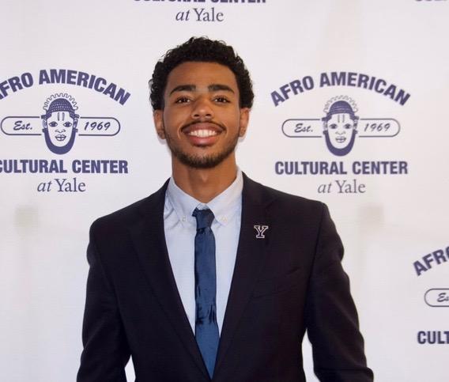
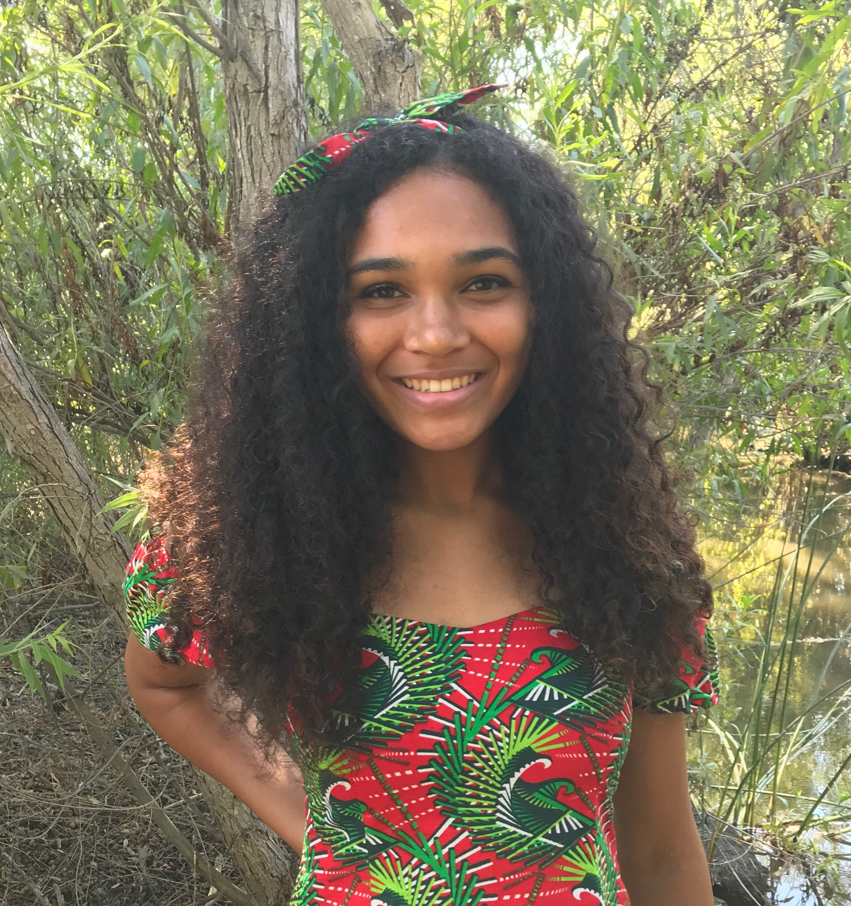
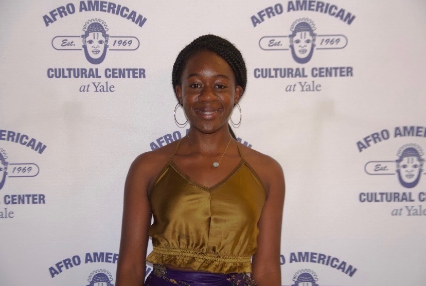
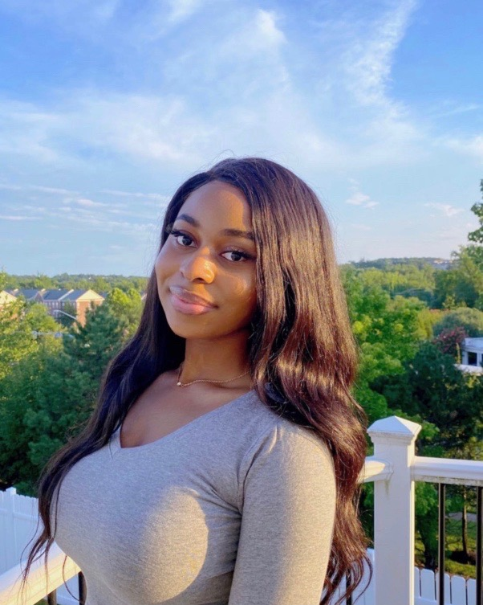
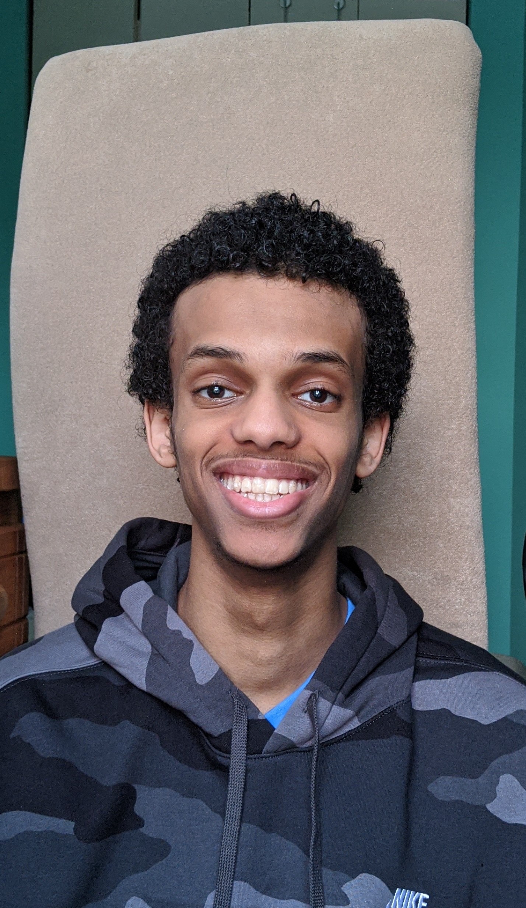
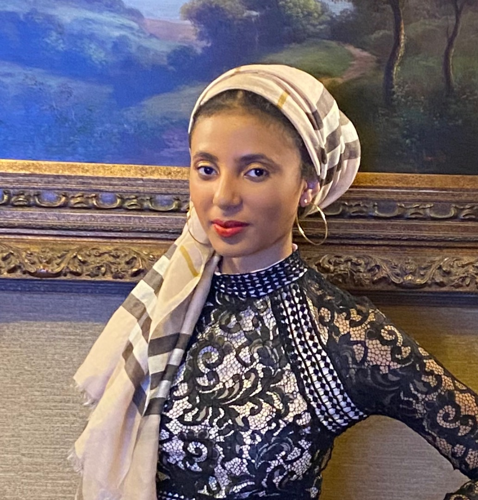
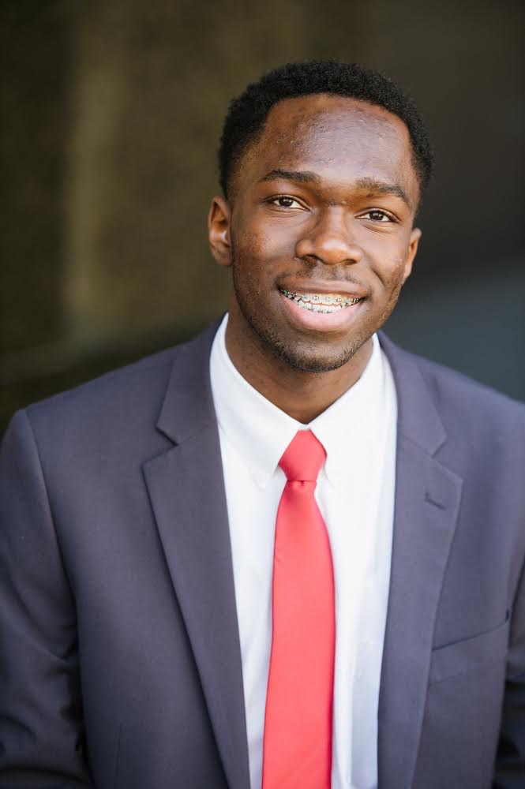
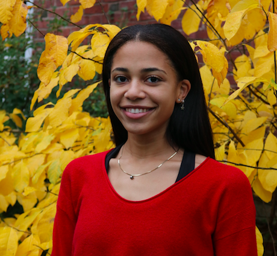

Stephen Martinez-Hamilton 2022
Stephen Martinez-Hamilton is a junior in Saybrook College, double majoring in MCDB and HSHM. His passion lies in actively addressing the systemic inequities that disproportionately impact Black communities through systemic research, advocacy, and community engagement. As the Health and Incarceration Lead, Stephen will research the disproportionate health effects that result from mass incarceration and coordinating events/partnerships for BPHY to connect with New Haven and other student organizations.
Jaida Morgan 2023
Jaida Morgan is a sophomore in Ezra Stiles double majoring in Molecular, Cellular, & Developmental Biology and History of Science, Medicine, & Public Health. In her role of health activism, Jaida will be raising awareness about systemic racism prevalent in the U.S. healthcare system and developing projects to connect with the youth in order to inspire the younger generation to find ways to combat the system. Additionally, she will be the main line of communication between the org and Yale faculty/health professionals and external health professionals/organizations, while running the BPHY website.
Ejehi Ihionkhan 2023
Ejehi Ihionkhan is a sophomore in Davenport College. She is a prospective MCDB+Anthropology major. One of her passions is fostering wellness within the communities she occupies. As the Health & Wellness Lead, she will research, educate, and advocate for health among BPHY members and Black New Haven residents, connecting them to opportunities to invest in their mental, spiritual, and physical health.
Princess Edemobi 2024
Princess Edemobi is a freshman in Morse College. She is a prospective history of science, medicine, and public health major. She is passionate about health equity and advocacy for underrepresented groups entering medicine. As a pre-health profession liaison, she will be working to build BPHY’s network with the Yale SOM, other health profession graduate schools at Yale, and black healthcare professionals in New Haven. Her goal is to provide opportunities for our members to learn more about different healthcare career paths through webinars and joint projects with our network. These community-based projects will be a way to engage with black New Haven residents and to educate and support black students in New Haven with an interest in healthcare.
Zerubabell Daniel 2023
Zerubabell Daniel is a sophomore in Pauli Murray College. He is interested in majoring in MCDB. as the community engagement & education, he will focus on the New Haven community, specifically high schools. He will put on things like health workshops, and possibly a STEM mentorship program, and will volunteer at clinics that work for Black and brown communities around New Haven.
Israa Mustafa 2023
Israa Mustafa is a sophomore in Timothy Dwight College. She is a prospective neuroscience and ER&M double major. As the health policy and current events lead, she will be educating students on different measures taken in health policy that have a direct impact on the Black community and educating about healthcare-related events occurring in the world right now that pertain to Black health.
Morgan Emokpae 2023
Morgan Emokpae is a sophomore in Davenport College from Mississippi. He is a prospective MCDB major with other interests in global health and epidemiology. As the Public Health & Pre-health opportunities lead, he will investigate health trends for the black community in New Haven and beyond. He will also share any pre-health opportunities that may be interesting or useful for BPHY members!
Astra Toyip 2022
Astra Toyip is a junior from New York City in Franklin College. She is majoring in Neuroscience and plans to pursue medical and public health degrees. She is particularly interested in health equity and using community based initiatives to achieve equitable health outcomes. In her role as the women’s health lead, Astra will focus on the current issues in Black women’s health that worsens the medics racial disparities.